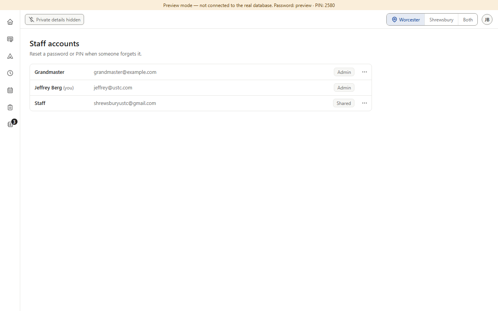
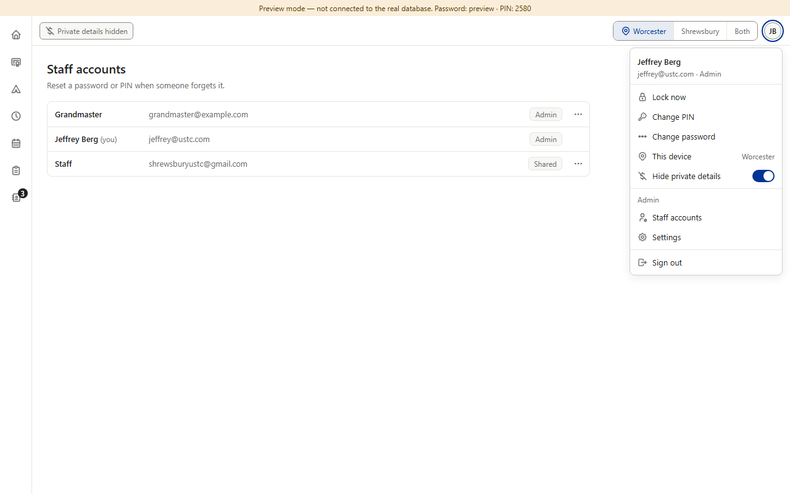
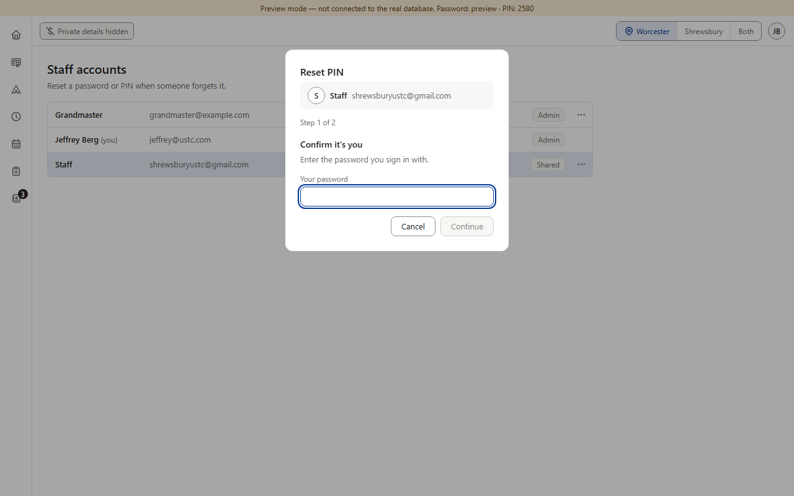
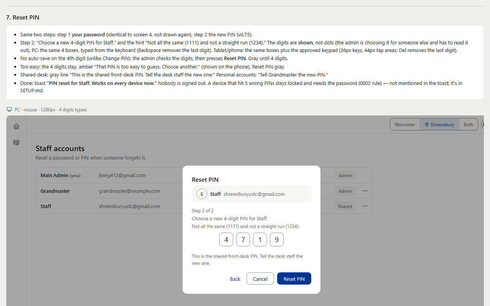
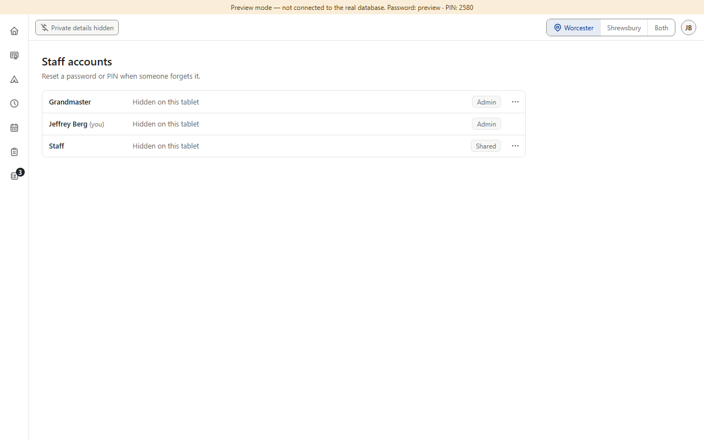
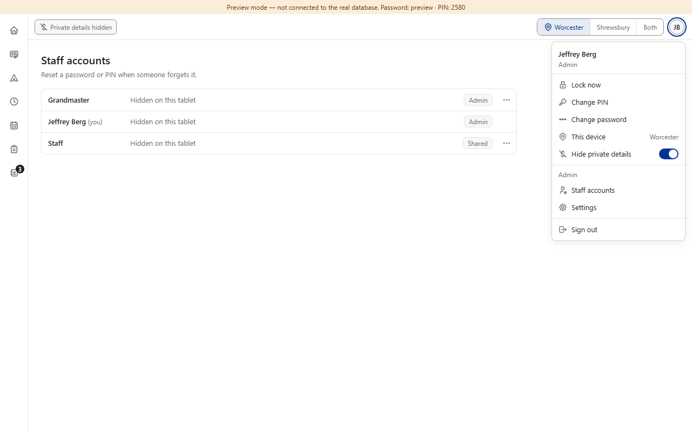
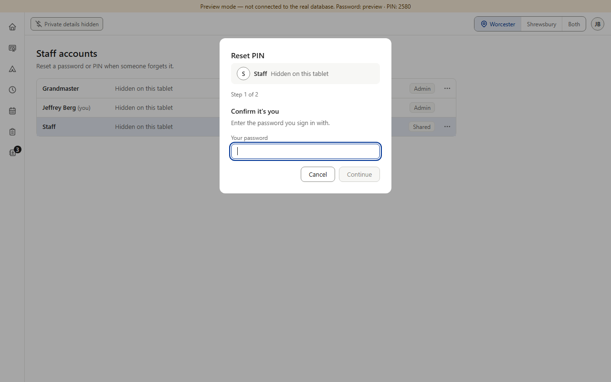
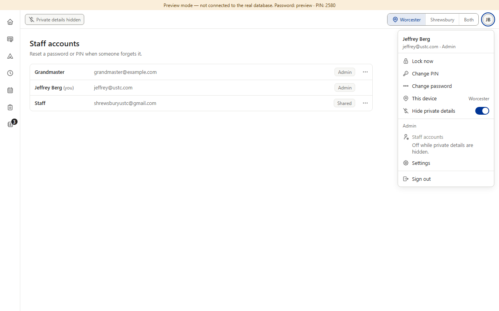

Open detail D2b · The staff side while “Hide private details” is on
From item 2; for Main's prompt (Staff accounts, the account menu). The rule says “email … on every screen”, but it was written for families (students, mostly minors, and their parents). Staff emails show in four places: your own in the account menu (anyone who opens it on that device sees it) and on the first-time Set PIN screen; every account's in Staff accounts (admins only) and in its Reset password / Reset PIN boxes, where the email is there “so nobody resets the wrong account” (approved mockup, screen 4). Those boxes then show the new password in plain text and the new PIN in four boxes (v0.73, v0.75; picture 4) — on a tablet where others can see the screen, that matters more than the emails. (Preview screenshots · PC size · fake data; picture 4 from the approved mockup)
Today (switch on)

1. Staff accounts with the switch on: every account's email shows.

2. The account menu: your own email under your name.

3. Reset PIN, step 1: the line naming the account, with its email.

4. Reset PIN, step 2 (approved mockup, v0.75): the new PIN in four boxes; Reset password shows the new password in plain text.
Options B and C, drawn

5. Option B: every staff email reads “Hidden on this tablet”.

6. B, the account menu: the role only.

7. B, Reset PIN: the name only — the email that tells two accounts apart is gone on that device.

8. Option C (recommended): Staff accounts grays — “Off while private details are hidden.” — like Star's desk-only New candidate (v0.507). Your own email stays.
The rule in C: the switch hides a family's date of birth, email, payments and form answers on every screen (D2a) and turns off Staff accounts; one tap on the top-bar chip turns the switch off again. Staff emails stay wherever else they show (your own account menu, Set PIN). Pictures 5–8 are drawn over the real screens; nothing in the app was changed.
Your choice — one question: should “Hide private details” also cover the staff side? A · No: the staff side stays as it is; the rule says “a family's …”.+ no work; the reset boxes keep the email that stops a wrong reset. − on a tablet with the switch on, an admin can still bring up staff emails — and a new password or PIN — where others can see. B · Hide staff emails like families' (pictures 5–7).+ the rule read word for word. − the reset boxes lose the email that tells two accounts apart; a new password or PIN still shows in plain text. C · Recommended: Staff accounts is desk-only while the switch is on (picture 8).+ no staff emails, new passwords or new PINs on a screen others can see; the reset boxes stay as approved; the same idea as Star's desk-only New candidate. − to reset a PIN on that tablet, an admin turns the switch off first; your own email still shows in your account menu.